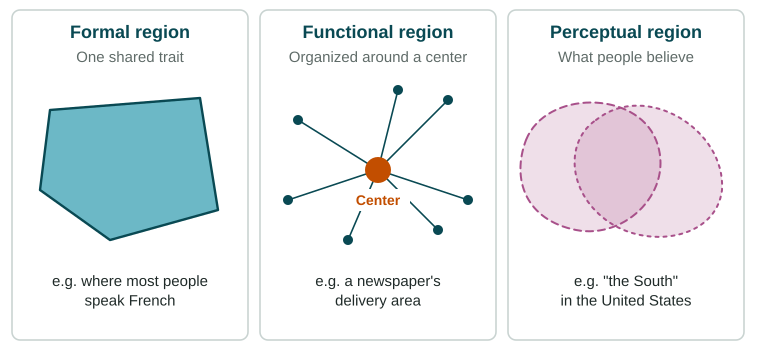

The world is too complicated to study one place at a time, so geographers group places into regions: areas whose places share something. A region is a tool, not a fact of nature. What it groups, and where its edges fall, depends on the question being asked and on who draws it.
Three kinds of region

A formal region (also called a uniform region) is an area whose places share one or more measurable traits. Quebec, Canada, where a large majority of people speak French as their first language, is a formal region in that sense. So are the Sahara (a desert climate) and the United States Corn Belt (a main crop).
A functional region (also called a nodal region) is tied together by flows to and from a center, its node. The area that commutes into Chicago each day, the area a Denver newspaper delivers to, and the area served by Atlanta's Hartsfield-Jackson airport are functional regions. Ties are strongest near the center and weaken with distance, because of distance decay. When transport gets faster, functional regions stretch.
A perceptual region (also called a vernacular region) exists in people's minds: "the South", "the Midwest" or "Silicon Valley". People's ideas come from history, culture, sports teams and the media, so they draw these regions differently. Surveys that ask people where a region is are a good way to map one.
| Formal | Functional | Perceptual | |
|---|---|---|---|
| Defined by | A shared, measurable trait | Flows to and from a center | What people believe |
| Example | Quebec as a French-speaking region | Chicago's commuting area | "The South" in the United States |
| How to map it | Measure the trait | Count trips, calls or deliveries | Survey people |
| Its edges | Where the trait fades | Where ties to the center weaken | Different for each person |
Fuzzy edges and transition zones
Few regions end at a sharp line. Usually a region's defining trait fades out across a transition zone (a transitional boundary). The Sahel, a belt across Africa south of the Sahara, is where the desert slowly gives way to grassland over hundreds of kilometers. In a survey of where "the North" of a country begins, some provinces will be split, with residents unsure whether they belong.
Regions overlap and can be contested
Because regions are drawn for different purposes, they overlap: a city can sit in a formal region of one language, a functional region around a larger city, and a perceptual region with its own nickname, all at once. Their edges can also be contested. Some definitions of "the Middle East" include Egypt and Türkiye, and others leave out one or both.
Regions at every scale
Regions exist at every scale of analysis. At the local scale: a pizza shop's delivery area in Toronto, or a market neighborhood in Lagos. At the national scale: the United States divided into regions such as New England and the Midwest. At the regional and global scales: Southeast Asia, or a world region such as Sub-Saharan Africa. Regional analysis means choosing the kind and scale of region that fits your question.